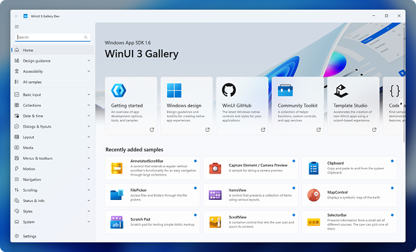
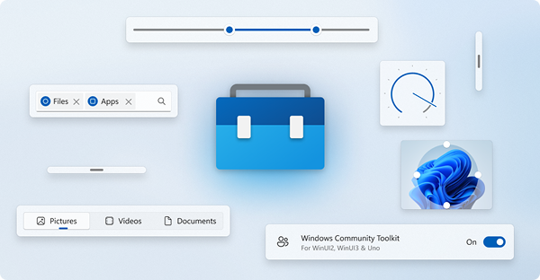

Samples and resources
This page contains links to resources that can make you more efficient as you develop your apps for Windows.
Samples
The WindowsAppSDK-Samples repository provides a collection of code samples that demonstrate how to use the Windows App SDK to build modern Windows applications. These samples cover key features such as WinUI 3, App Lifecycle, Windowing, and Push Notifications, offering practical, hands-on guidance for developers. Whether you're new to the Windows App SDK or looking for specific implementation details, this repository serves as a valuable resource to accelerate development and explore best practices. Other samples can be found in our Samples Browser.
WinUI 3 Gallery

The WinUI 3 Gallery is the must-have companion app for WinUI developers. It's a sample app that showcases the full range of WinUI 3 controls, styles, design guidance, and capabilities. This interactive gallery helps you explore and experiment with WinUI components, view XAML code examples, and understand best practices for building modern, fluent Windows applications. Whether you're designing a new app or refining an existing UI, the WinUI Gallery is an essential reference for leveraging the power of WinUI in your projects. You can either browse the repository for source code or download the WinUI 3 Gallery from the Microsoft Store.
Windows Community Toolkit

The Windows Community Toolkit is an open-source collection of helper functions, custom controls, and app services. It simplifies and demonstrates common developer tasks when building apps for Windows.
You can get the Windows Community Toolkit Gallery app from the Microsoft Store to see the controls in an actual app or get the source code on GitHub at CommunityToolkit/Windows.
Other
This training module steps through how to set up your developer environment and use WinUI, the Windows App SDK, and the Windows Community ToolKit to build a Windows app called SnowPal.
SnowPal is a word game in which the app selects a word for the user to guess and presents that word as a series of blank spaces, with each blank space representing a letter from the word in spelling order. The player takes turns guessing a single letter that they believe is in the word. If the letter is not in the word, a missing piece of the SnowPal character is added; otherwise, the letter replaces the corresponding blank(s) in the word. The player wins by guessing the word or loses when all pieces of the SnowPal character have been added.
By building this app step by step, you gain hands-on experience with core development concepts while creating something fun and functional.
The .NET Community Toolkit is a collection of NuGet packages with high-performance helpers, extensions, and APIs designed to enhance .NET development across WinUI, WPF, MAUI, and other .NET applications. A key component is the MVVM Toolkit, a lightweight and modern Model-View-ViewModel (MVVM) library that simplifies app architecture with features like observable properties, commands, and dependency injection. Built for performance and flexibility, the MVVM Toolkit helps you implement MVVM patterns efficiently while keeping your code clean and maintainable.
Template Studio provides a powerful scaffolding tool for quickly generating modern Windows applications using WinUI 3 or WPF. The Visual Studio extension guides developers through a wizard-based experience to create project templates with best practices, including MVVM architecture, navigation patterns, dependency injection, and predefined app features. By automating boilerplate setup, Template Studio helps developers focus on building great experiences while ensuring consistency and maintainability in their applications.